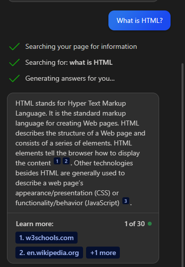

高校生が考えるAI導入について
早速ですが、みなさんはAIをご存知でしょうか？
最近では、社会や教育機関でAIの使用が普及しています。
身近にあるといえば、chat GPTでしょうか
AIがカンタンにまとめてくれるかなりの優れモノですよね
しかし、AIの技術によって、AIに任せて仕事がなくなるっという問題があります。
有名なもので言えば、レジですかね、カメラを設置してお会計をするっていう
ガチで最近の技術です
まあ、AIなんでかなり頭がよくうまく使えば強盗などの計画でも
考えることができます。
私の考えとしては、「AIを使ってもよいが強めの制限はかけるべき」
理由は、AIが発展しすぎると調べる能力や仕事が全て奪われてしまうからであり
使うところは制限するべきだと思います。
とはいえ、AIは便利なもので、カンタンに知りたいものを教えてくれます。
以下の画像をご覧ください。

※使用 bingai
このようにカンタンにサイトを参考にまとめて答えを出しています。
カンタンにまとめてくれるのはいいのですが、
偽の記事も混ぜたり、画像を使った説明が難しいので
サイトを参考にして自分でまとめる力が減ってしまいます。
このように、AIは便利なものですが
メリットデメリットがあり、なかなか難しい状況です....
※このサイトは個人で運営しています。収益は得ておりません。
おすすめ記事
記事がありません。
更新2023年7月6日